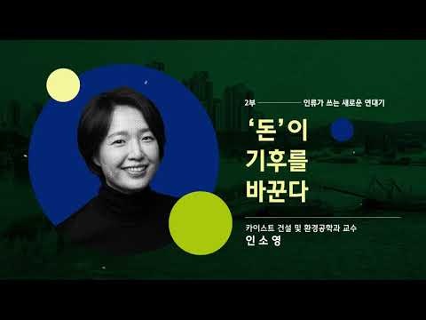
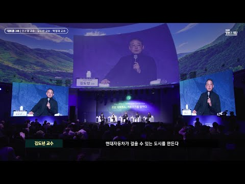

Chung Mong-Koo Foundation, 2023

Chung Mong-Koo Foundation, 2023

2024 Joint Policy Symposium by the Korean Economic Association and the Korea Deposit Insurance Corporation
POSCO Research Institute
Media Interview by The Korea Economic Daily
Media Mention by Maeil Business Newspaper
Media Mention by Maeil Business Newspaper
Media Mention by ChosunMedia
Media Mention by The Korea Economy Daily
Media Mention by Asia Economy Daily, 2022
Media Interview by Asia Economy Daily, 2022
Media Mention by Project Syndicate, 2019
Media Mention by Project Syndicate, 2018
Media Mention by Stanford Engineering Magazine, 2018
Media Interview by WIRED Magazine, 2018
Media Mention by Sustainable Insight, 2018
Media Mention by Indexology by S&P Dow Jones Indices, 2018